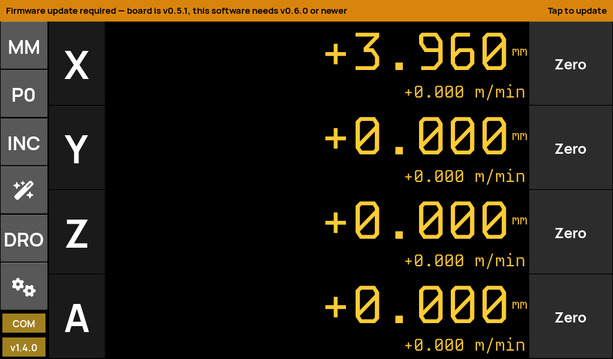
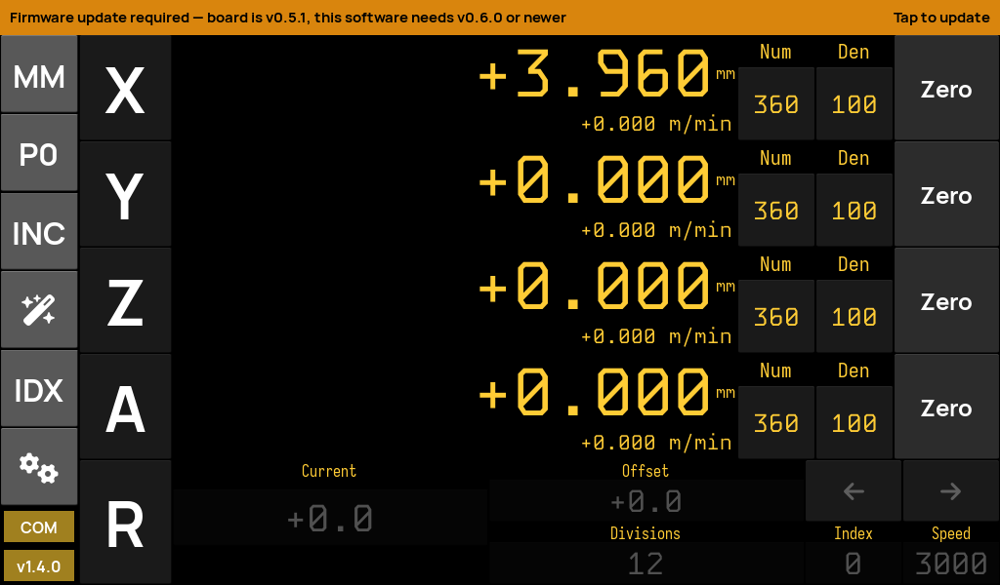
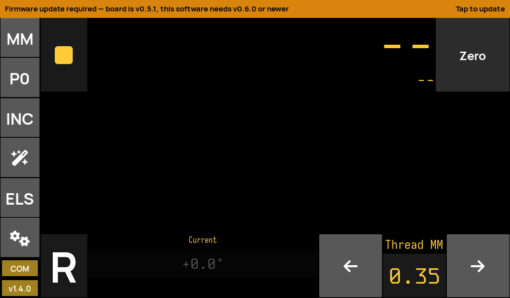
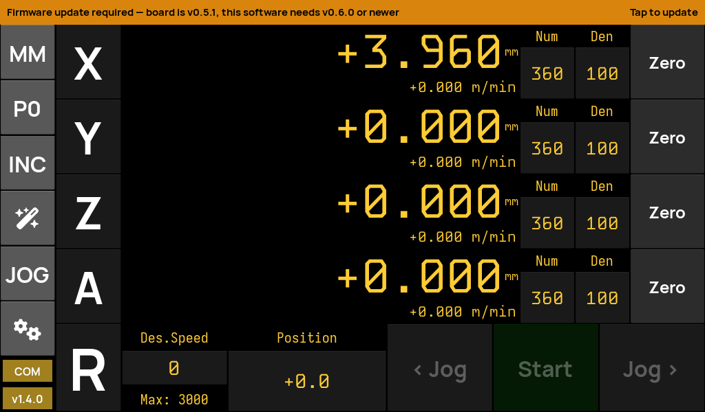

drDRO is a full-screen Digital Read-Out and single-axis / rotary-table controller for the drDRO STM32 control board. Four scale inputs, electronic lead-screw & indexing, spindle sync, pattern plotting and on-device firmware updates — over a single RS-485 line.

drDRO is the successor to rotary-controller-python — the same touchscreen UI, re-plumbed to speak the drDRO firmware's custom RS-485 line protocol, with board-stored settings and firmware updates driven over the very same bus.
Four hardware scale inputs, big amber seven-segment displays, per-axis feed-rate, metric / imperial / angle formats, and per-axis zero & offset.
Drive the servo/stepper axis: jog, indexed moves, electronic lead-screw threading & power-feed, and spindle-synchronised motion with configurable gear ratios.
Flash the STM32 board's firmware straight from the UI over RS-485 (YMODEM), pick the boot bank, and roll back — no ST-Link, no cables to swap.
Circle, line and rectangular hole patterns computed and drawn on an interactive pan/zoom plot, with distance-to-go overlays.
Servo speed, acceleration and calibration live in the board's flash — read on connect, saved on change. Machine profiles snapshot everything to swap setups.
A ready-to-flash Arch Linux ARM image boots straight to the app, full-screen, silent, touch-ready — with an in-field self-updater for both app and firmware.
The Kivy touchscreen UI. Runs on the Pi appliance, or on any desktop for development. Talks to the board over one serial port.
See what it does →STM32F411 firmware: RS-485 line protocol, dual-bank IAP bootloader, persistent flash settings. Updatable from the app.
Build & flash it →A Raspberry Pi HAT: wide-input DC → 5 V for the Pi, plus a protected, auto-direction RS-485 link to the controller.
See the hardware →A purpose-built Arch Linux ARM appliance that boots straight into drDRO. One image covers the Pi 3 / 4 / 5 family.
How the image works →The mode button on the home bar cycles between the four workflows. Each reshapes the bottom control strip for the job at hand.

Rotary-table divisions and indexed moves.

Electronic lead-screw threading & power-feed.

Continuous jogging with live speed control.
Pure read-out — the biggest, cleanest digits.
Demos from the creator and builds from the machining community — threading, gear cutting, dividing heads and more.
The appliance image is built from a single Arch Linux ARM rootfs that covers the whole Pi 3 / 4 / 5 family. It's been hardware-validated end-to-end on real boards.
| Board | Status | Notes |
|---|---|---|
| Pi 3B / 3B+ | ✓ Verified | Reference bench board |
| Pi 5 | ✓ Verified | usb_max_current_enable |
| Pi 4 / 400 / CM4 | ● Expected | Same kernel & dtbs |
| Pi Zero 2 W | Untested | aarch64, may work |
Download the latest image, flash it with Raspberry Pi Imager, plug in the board, and boot.